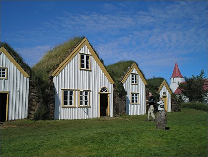

<< retur Glaumbær

Det nævnes i Grønlændersagaen, at Glaumbæregnen var et velegnet sted for bebyggelse, at den navnkundige opdagelsesrejsende Karlsefni sammen med hustruen Gudridur Thorbjarnardóttir her opkøbte store landområder, og at sønnen Snorri Thorfinnsson ved siden af sin gård lod en kirke opføre ved Glaumbær, mens moderen foretog en pilgrimsrejse til Rom. Kirken, som for længst er gået al kødets gang, stod sikkert for ”glaumbærerne” som et symbol på de nye tider omkring år 1000, hvor hedenskabet fik stærk konkurrence af kristendommen. Vi er altså på et sted med lange forbindelseslinier bagud i historien, en lokalitet, hvor luften er tung af fortidsstof. Udgravninger, der påbegyndtes i 2002, kombineret med moderne tekniske undersøgelser, har afsløret resterne af et tørveisoleret langhus, hvis datering stemmer overens med Grønlændersagaens tid, men også, at anden og tidligere bebyggelse fandtes på stedet. Måske kan på sigt sagastoffet endeligt verificeres.
Snorri Thorfinnssons kirke blev den første i en lang række af gudshuse i Glaumbær, som måske har været en særlig religiøst orienteret oase i et ellers trosmæssigt splittet samfund, i hvert fald bliver gården i 1550 gjort til kirkelig ejendom, altså præstegård, af biskop Jón Arason fra Holar. Arason henrettes senere af sine protestantiske modstandere, men Glaumbær synes at have gennemlevet en fredelig udvikling med skiftende generationer af præster, der udvidede gårdens aktiviteter til at omfatte både skolegang og ældrepleje.
Den nuværende præstegård fra 1936 er arkitektonisk tredje generation efter den oprindelige fra 1681 samt moderniseringen i 1784, og den demonstrerer grundtrækkene i den hustype, der kaldes ganghuset. Hvordan bebyggelserne fra før 1681 har set ud, vides der som oven for nævnt en del om, det er fortrinsvis langhuse, der har ligget her, hvilket i øvrigt stemmer fint med, at netop denne gårdtype var udbredt i nogle af de lande, landnamsfolkene kom fra. Ganghuset kan ses som en videreudvikling af denne ældgamle byggeform. Ændringen af beboelsestype nødvendiggjordes af flere forhold, dels fandtes der efter landnamsmændenes rovdrift ikke skov på Island, og forekomsten af drivtømmer var sparsom, dels fulgte med middelalderen klimaforandringer, naturkatastrofer og sygdomsepidemier, som forarmede landet med en stækket handel over havet til følge. Man kom i lommen på bl.a. den danske søhandel, så man ikke havde råd til at importere træ og kunne således ikke udvide landets egen handelsflåde, men altså heller ikke bygge huse, som krævede større mængder af dette materiale i deres konstruktion. Øens beboere måtte se sig om efter alternative materialer og opdagede, at de så at sige stod på løsningen: sten og tørv. Man må formode, at disse billige og let tilgængelige materialer skaffede tag over hovedet på det ret store antal fattige bønder, som Sturlungatidens ”model” med få rige storbønder og alt dominerende jordbesiddere havde skabt; som en skærende kontrast til de store gårde lå beskedne tørvehytter ude i landskabet som små kommaer i en vældig sætning.
Fra begyndelsen af middelalderen og vel helt frem til slutningen af 1800 tallet forblev ganghuset den foretrukne byggeform, undervejs jævnligt forbedret både indvendigt og udvendigt.
Efter at have skridtet bygningskomplekset af kan jeg konstatere, at kun bærende stolper, gavl og indvendige tagkonstruktion består af træ, kassemurene derimod er bygget op udvendigt af sten og tørv og fyldt ud med en blanding af igen tørv og sten samt jord. Græstørvene med deres solide, tæt sammenvoksede rodnet dækker taget og beskytter effektivt imod nedbør. Jeg gør min entre ad indgangen til det fjerde af seks gavlhuse, der kommer ikke meget sollys ind til den et par og tyve meter lange gang, jeg straks betræder, centralgangen, som har givet hustypen navn. På begge sider af gangen er der adgang til i alt otte rum, for enden af den ligger badstuen, et begreb, der ikke sjældent optræder i ældre nordisk litteratur. Badstuen fungerede oprindeligt som baderum, hvor man hyggede sig ofte flere sammen med sladder, dybsindige diskussioner eller letfærdig omgang, men efterhånden kom badstue til at betegne det rum, som kunne opvarmes og således danne en lun ramme om familiens samvær. I Glaumbær har badstuen tjent mange formål, den har været soveværelse, arbejdsrum, spisestue og gæsteværelse for rejsende, der var beskyttet af en gæstevenskabsnorm stort set identisk med den, oldtidens grækere respekterede. Betalingen for husly bestod ofte i foredrag af skjaldedigtning eller aktuelle beretninger udefra; som i den blicherske bindestue samledes de faste beboere om historiefortælleren, sugende ordenes balsam til sig, for en stund glemmende hverdagens mange nedslidende, trivielle gøremål. Jeg går ned ad trapperne fra dette interessante rum, nysgerrig efter at se fadeburene og mælkestuen, for jeg havde jo nok bemærket de private køkkenredskaber over sengene i badstuen, og madglæde er en af mine svagheder; hvad pokker spiste de her, når de ved aftenstid sad på sengekanten med tallerken eller skål? Jo, inde i mælkerummet fortæller de mange fade historien om, hvordan Skyr blev til. Skyr er et syrnet mælkeprodukt fattigt på fedt, men med et ret højt proteinindhold. Produktet virker på grund af sin tyktflydende konsistens samt et meget højt tørstofindhold mættende og har med sin friske, syrlige smag udgjort et både delikat og nærende måltid for Glaumbærs beboere. Her i mælkerummet har frisk mælk vandret fra et kar til et andet til et tredje, mens fløde er skilt fra, skummetmælk syrnet osv., idet man har brugt den viden om fremstillingsprocessen, de norske vikinger bragte med sig omkring år 1000. Heldigvis kan du stadigvæk nyde skyr på Island, for eksempel er det ofte et fast indslag på morgenbordet. Men naturligvis kunne skyr alene ikke dække næringsbehovet, så jeg må videre til de to fadebure og køkkenet for at orientere mig yderligere om de gamle nordboeres kulinariske tilbud, for noget er der jo om Brillat-Savarins bon mot: Fortæl mig, hvad du spiser, og jeg skal sige dig, hvem du er. Under besøget i de nævnte rum, går det op for mig, hvor flittige, disse mennesker måtte være, hvis livet skulle opretholdes, henvist, som de var, til at tage næring fra en karsk og lunefuld natur. Den suverænt vigtigste medspiller i dette var fåret, som blev udnyttet veritabelt til sidste blodsdråbe; i fadeburenes kar opbevaredes alt fra hjerne til fødder. De dele af dyret, som skulle holde vinteren over blev røget og hængt op under loftet sammen med ligeledes røgede fisk fra nærtliggende søer og vandløb. Før slagtningen leverede fårene naturlig gødning i form af ekskrementer, der i øvrigt efter tørring kunne anvendes som brændsel. Dertil kom, at selve rygningsprocessens røgudvikling og varme imprægnerede husenes byggematerialer, så boligen både blev lunere og mere vandresistent. Her boede mennesker nært forbundne med den natur, der omgav dem, hårdføre, nøjsomme folk med talent for håndværk og landhusholdning. De gavlhuse, som ikke er tilgængelige fra centralgangen, tjente som smedje, lager- og redskabsrum, her lavede man smørdrittel, hestesko, sadler, markredskaber og meget mere; man var selvforsynende med stort set alt. Præstegårdens dygtige tjenestefolk boede i henholdsvis Nordstuen og ”Gusa”, to rum, stødende op til gangen, der begge tillige tjente som gæsterum. Nordstuen kan prale af engang i 1840erne at have huset den navnkundige digter og naturvidenskabsmand Jonas Hallgrimsson, mens ”Gusa” beretter en helt anden historie: Stuens navn kan oversættes til Sprøjte, og historien bag er den, at en gammel, gnaven, støjallergisk kone engang boede i rummet, mens præsten holdt skolegang for tyendets børn. Når eleverne var færdige med undervisningen, gik de larmende gennem gangen, hvilket gjorde konen så rasende, at hun en dag hældte -sprøjtede- indholdet af sin natpotte i hovedet på dem. Sandt eller ej, så synes jeg næsten, at det stadig stinker af alt andet end parfume, mens jeg står i ”Gusa”. Jeg må ud i den friske luft, faktisk har jeg også set nok til at danne mig et plausibelt indblik i tørvegårdens liv. Det er blevet kaffetid, så heldigt nok ligger der tæt ved gården en lille træbygning, hvis cafe byder på små forfriskninger. Vi sætter os under et litografi, dateret 1840, forestillende Bertel Thorvaldsen, hvis far var islænding. Kunstneren er en vis Emile Lassalle, fransk litograf, portræt- og genremaler, som slog sine folder i attenhundredetallets Paris, og uden at være prangende god synes han at have været en bedre håndværker end ophavsmanden til de pandekager, min kone og jeg konsumerer. Lokket af ”pandekage med fyld af rabarbersyltetøj og en smule flødeskum” skuffes vi over, hvad der viser sig at være 99 % flødeskum med en klat syltetøj, som kræver meget stærke briller for at lade sig se, det hele pakket ind i slatten dej. Heldigvis kan en kop stærk, sort kaffe sammen med en anden specialitet - klejner med kommen - fjerne den klæge fornemmelse i munden. Fortvivl dog ikke, for cafeen byder også på rúgbraud efter en gammel opskrift smurt med røget lammekød eller laks, sikkert meget lig det, man på gården Glaumbær har tillavet og spist.
Under den lidt specielle kulinariske oplevelse blader jeg lidt i en brochure, og det går op for mig, at huset, vi sidder i, byder på en spændende historie. Så sent som i 1991 er det blevet flyttet til Glaumbær, selvfølgelig for at bevare det, men især for at vise den hustype, der i 19. årh. erstattede de gamle tørveboliger; vi besøgende kan således foretage en arkitektonisk vandring gennem et par århundreder. Smart! Huset har været vidne til fire generationers liv, som det gennem den tilknyttede historie nu kan belyse. Áshús kaldes den enkle, smukke træbygning, om hvilken det fortælles, at den blev bygget i 1880erne med det formål at starte en pigeskole her, en for de tider temmelig ambitiøs og progressiv ide. Ideen kunne dog ikke realiseres, men den progressive ånd slap ikke ud af huset, som blev ramme om en fremadrettet kursusvirksomhed. Unge mennesker af begge køn lærte om det nyeste inden for landbruget, rationelle dyrkningsmetoder kombineret med tekniske hjælpemidler præsenterede husets altruistiske ejere dem for. Kirken, man i dag kan se på Glaumbær er en fjern efterkommer af den, Snorri Thorfinsson lod opføre, men en skulptur forestillende moderen Gudridur minder os om historien bag stedets første kirke. Gudridur var den første islandske kvinde, der fødte et barn uden for landets grænser, og her vises situationen, hvor hun returnerer til fødeøen fra Amerika med sin søn på skulderen. |